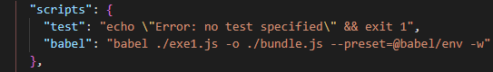

Babel é um pacote que tem disponivel via webpack, ele serve para converter codigos, de recentes para antigos, para navegadores antigos possam reconhecer o js
Instalando:Observação: apos a criação do bundle.js será preciso carrega-lo no lugar q queira usa-lo via script, apartir dai, todos navegadores reconheceram o codigo
FORMA MANUAL: Toda mudança que for preciso tera que ser feito no arquivo js, sem ser o bundle, apos todas as mudanças, teram q refazer o mesmno processo
SALVANDO AUTOMATICAMENTE: Dentro do arquivo package.json na tag script, é so digitar o comando abaixo 